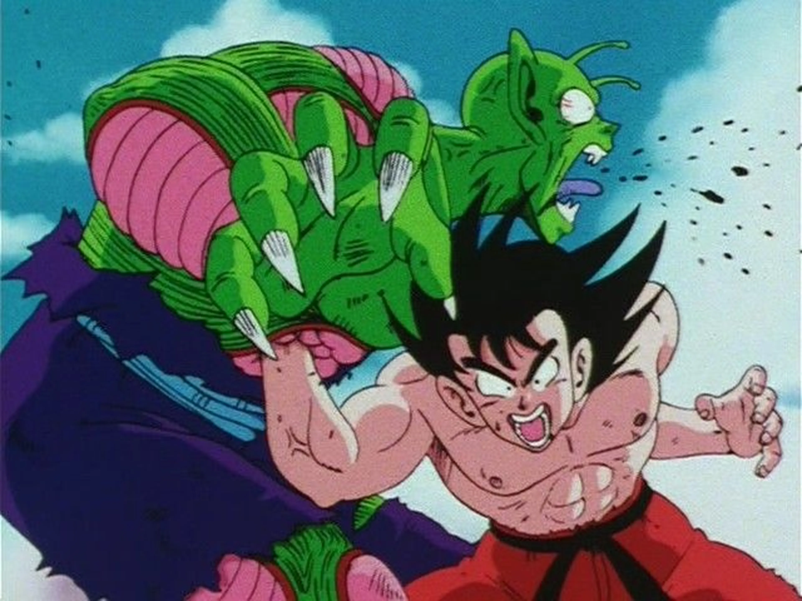
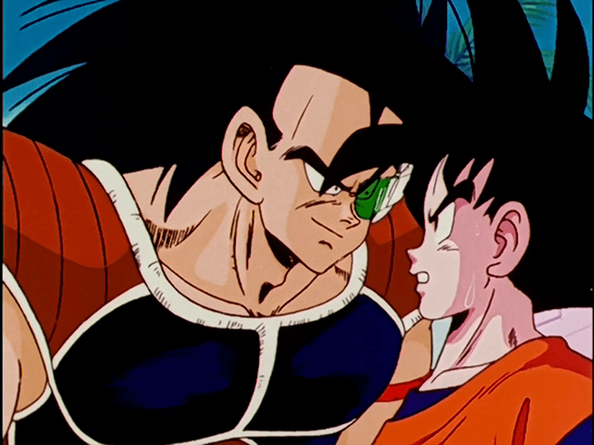
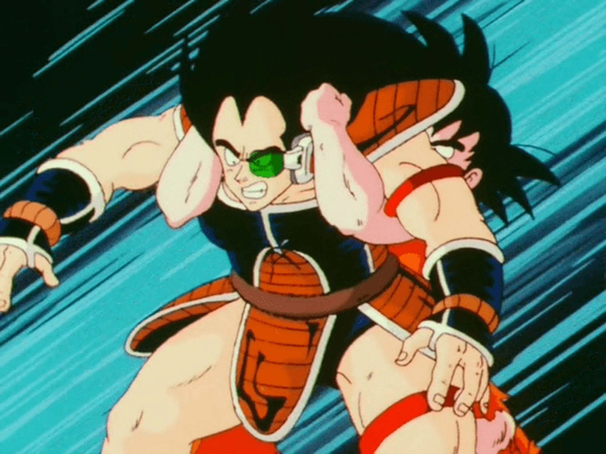

Primera temporada
Acá vas a encontrar una selección de capítulos de las primeras sagas de Dragon Ball Z. Cada tarjeta tiene una imagen, un mini-resumen y etiquetas de la saga correspondiente.
Filtrar por saga
Capítulos
-
Capítulo 1

Raditz llega a la Tierra y revela los orígenes Saiyan de Goku.
-
Capítulo 2

Goku y Piccolo unen fuerzas ante una amenaza superior.
-
Capítulo 3

La batalla inicial contra Raditz pone a prueba sus límites.
-
Capítulo 4

Se revelan nuevos planes y el peligro que se aproxima a la Tierra.
-
Capítulo 5

Los héroes deciden entrenar para amenazas aún mayores.
-
Capítulo X
Rumbo a Namek, búsqueda de las Dragon Balls.
-
Capítulo Y
Los androides aparecen y el futuro está en juego.
-
Capítulo Z
La amenaza de Majin Buu pone a prueba a los guerreros Z.